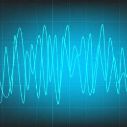

Optical Theremin based True Random Number Generator.
Developed an optical version of the
Theremin using photodiodes, NI myDAQ and LabVIEW. The voltage signals generated by the photodiodes are sampled to form a sine wave. This wave is then reproduced as an audio signal and simultaneously represented as a sequence of random numbers employed in an RSA instance. The paper can be found
here.
Smart Fetal ECG Acquisition & Analysis System.
Prototyped a compact and robust ECG machine for rural landscapes that can acquire the abdominal ECG of a pregnant woman and separate the convoluted mixture into mother's ECG and fetal ECG (FECG). The FECG is then filtered and analyzed to indicate the health of the fetus. In case of abnormalities, the reports are sent to the nearest healthcare center using the on-board GSM module and LabVIEW Web Services for immediate diagnosis. The paper can be seen
here.
Freshwater Quality Management System.
Developed a prototype device for lakes that can acquire and analyze data from pH, Turbidity and TDS sensors with Raspberry Pi at its core. Performed regression analysis on RPi (using Mathematica and Octave) to predict the residence time of the lake based on the parameters acquired and comparing the result against other statistical models in order to prevent its further deterioration.
The paper can be found
here.

Smart headphones with ANC & Speech Recognition.
Developed the prototype of a low cost headphone with Active Noise Cancellation (ANC) that can selectively detect the surrounding environment in real time and process the information to the user, thereby reducing the risk of accidents (viz. warning the user of the incoming traffic). It employs an Adaptive Line Enhancer based on the
LMS algorithm and an
easyVR module for speech recognition implemented on TI's DSP
kit.
The paper can be seen
here.
IntelloFan.
Designed and developed the prototype of an intelligent fan using ultrasonic sensors and Maximum Length Sequence
(
MLS) diffusers installed on TI MSP430 microcontroller which automatically regulate the fan's intensity depending on the location of the occupant in the room.
Publications
Rahul Sharma, Ramya Ullagaddimath, Amit Baran Roy, Apratim Halder, Veena Hegde, "
Optical Theremin based
True Random Number Generation (TRNG) System", 2015 IEEE International Conference on Advances in Computing,
Communications and Informatics (ICACCI), pp. 571-575
Amit Baran Roy, Apratim Halder,
Rahul Sharma, Veena Hegde, "
A Novel Concept of Smart Headphones using Active
Noise Cancellation and Speech Recognition", 2015 IEEE International Conference on Smart Technologies and
Management for Computing, Communication, Controls, Energy and Materials (ICSTM), pp. 366-371
Ashwin Baliga, Veena Hegde,
Rahul Sharma, Rainer D'Souza, Siddharth Chakraborthy, Gautham Ramdas,
"
FORESIGHT: A Novel Design of Travel Aid for the Blind, 2015 IEEE International Conference on Computing and Network Communications, pp. 696-702